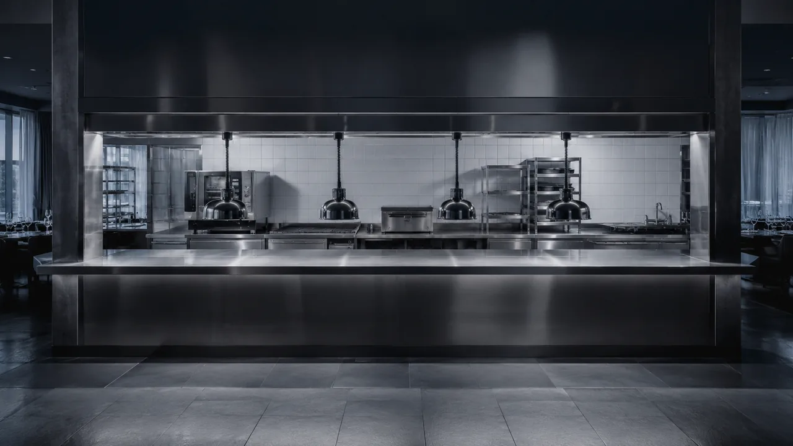
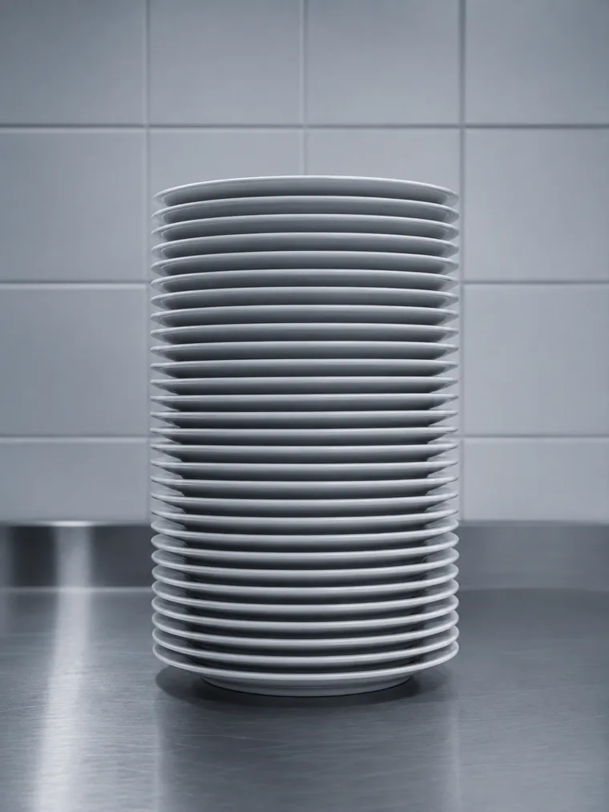
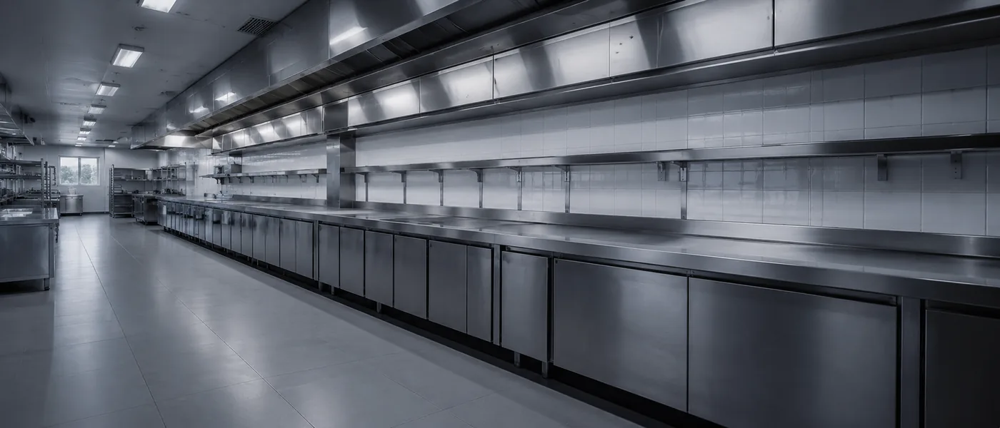
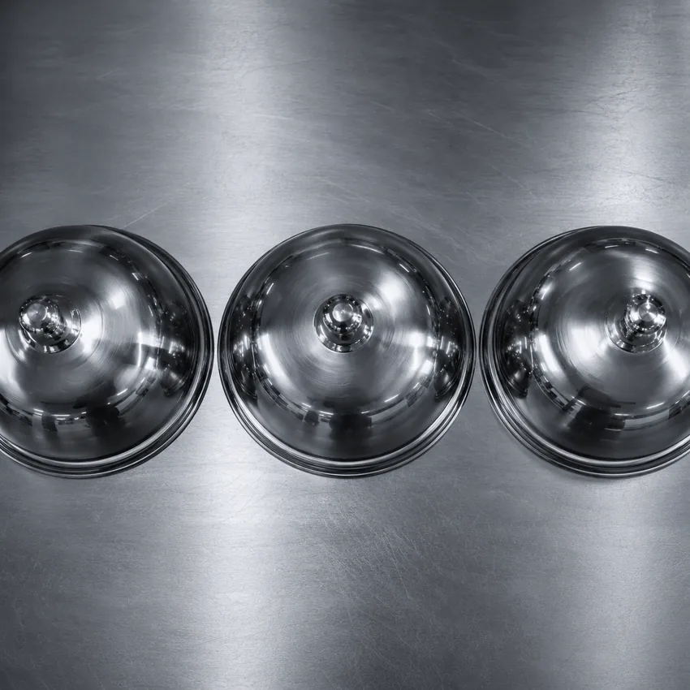

Menu trilingue FR/EN/IT — sans rechargement
Le menu complet est disponible en français, anglais et italien, sans rechargement de page. Les clients internationaux trouvent les informations dans leur langue — la réservation suit naturellement.

Ce projet fictif illustre ce qu'un site complet haut de gamme, multilingue FR/EN/IT avec WhatsApp intelligent peut apporter à un restaurant gastronomique dans le Var. 100/100 en performances mobile et desktop, mesurés sur le site déployé.
La Table Méditerranéenne est un restaurant fictif. La marque, la carte et l'histoire racontée ci-dessous sont inventées — ce n'est pas une référence client.
Le site, lui, existe. Il est développé, déployé et accessible en ligne. Les scores présentés plus bas sont mesurés sur ce site réel, et vous pouvez les vérifier vous-même à tout moment via le lien PageSpeed.
Un client choisit son restaurant gastronomique sur Google avant même de quitter son hôtel. Sans site qui donne envie — pas de réservation, même pour le meilleur chef.
Pour La Table Méditerranéenne à Saint-Tropez, l'objectif était ambitieux : un site complet et haut de gamme, multilingue FR/EN/IT pour capter la clientèle internationale, avec WhatsApp intelligent pour les réservations et une galerie immersive — le tout à 100/100 en performance.
La clientèle d'un restaurant gastronomique à Saint-Tropez est internationale, exigeante, et réserve depuis son téléphone. Un site lent ou sans version multilingue, c'est une table qu'on ne réserve pas. Un site premium, rapide et disponible en trois langues, c'est une table qu'on trouve.


Le menu complet est disponible en français, anglais et italien, sans rechargement de page. Les clients internationaux trouvent les informations dans leur langue — la réservation suit naturellement.
Un clic ouvre WhatsApp avec un message pré-rempli : date souhaitée, couverts, préférences. Le client envoie en quelques secondes. Le restaurateur reçoit une demande complète — zéro friction, zéro formulaire.
Photos des plats, de l'ambiance et de la terrasse en galerie pleine page avec transitions fluides. Le client visualise l'expérience gastronomique avant de réserver — et cette envie déclenche l'acte.
Balises hreflang FR/EN/IT, Schema.org Restaurant, Google Business Profile optimisé. Structuré pour ressortir sur "restaurant gastronomique Saint-Tropez" en trois langues — clients français, anglophones et italiens.
La salle se juge à table.
Le restaurant se choisit avant.
Mobile
Score parfait mobile malgré la galerie immersive. Le client voit les plats sans attendre.
Contrastes WCAG, structure sémantique, navigation clavier — sur un site trilingue à galerie riche.
HTTPS, images WebP, zéro librairie vulnérable, avec intégration WhatsApp.
H1 géolocalisé, Schema.org Restaurant, hreflang FR/EN/IT.
Desktop
Score parfait desktop. La galerie s'affiche sans attente dès l'ouverture.
Trois points sous le mobile : ils reflètent des choix esthétiques assumés sur les grands formats.
Cohérence technique avec le mobile. Sécurité et protocoles maîtrisés.
Google indexe les trois versions linguistiques — chacune cible son marché.
Scores relevés sur le site déployé. Lighthouse évolue : ces valeurs peuvent varier d'une mesure à l'autre — le lien PageSpeed plus bas permet de les recalculer en direct.
100/100 en performances mobile et desktop. Sur un site à galerie immersive, menu trilingue et intégration WhatsApp, ce niveau reste rare. Il est structuré pour ressortir sur les requêtes locales gastronomiques du Var, dans les trois langues.
Chaque page optimisée individuellement, images WebP en lazy-loading, fonts hébergées localement, WhatsApp déclenché côté client sans serveur. Le multilinguisme FR/EN/IT est géré en JavaScript pur — zéro plugin, zéro surcharge. Résultat : le score d'un site simple, la richesse d'un site premium.
Ouvrez le site sur mobile. Testez le changement de langue, cliquez sur WhatsApp, parcourez la galerie. Comparez avec les autres restaurants que vous trouvez sur Google. La différence est immédiate.
Site de démonstration — déployé sur GitHub Pages

Découvrez notre expertise complète pour les restaurants du Var 83 — menu en ligne, WhatsApp, galerie, multilingue, SEO local.
→ Page restaurant VarPage dédiée aux restaurants de Saint-Tropez — clientèle internationale, terrasses de prestige, exigences premium.
→ Restaurant Saint-TropezBasé à Saint-Tropez, je connais le marché local et accompagne tous les professionnels du Golfe de Saint-Tropez.
→ Page Saint-TropezVotre site de restaurant existe mais est lent ou sans multilinguisme ? Je le refonds entièrement — nouveau design, nouvelles performances.
→ Voir la refonteAprès le lancement, je maintiens votre site disponible 24h/24, 7j/7. Crucial pour un restaurant — à partir de 60 €/mois.
→ Voir la maintenanceDécouvrez les autres sites créés pour les professionnels du Var — artisans, agences immo, coiffeurs, conciergeries.
→ Voir le portfolioUn service se prépare toute la journée.
Le site, une fois pour
toutes.
Découvrez l'offre complète sur la création de site pour restaurant ou demandez directement votre devis gratuit.
Devis 100% gratuit · Sans engagement · Réponse sous 24h · Var 83
Étude de cas restaurant gastronomique Saint-Tropez · Performance web restaurant Var 83 · Site restaurant multilingue · Création site restaurant Golfe de Saint-Tropez